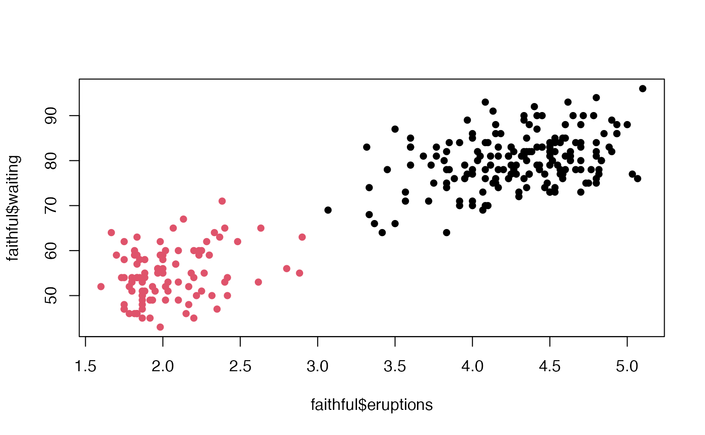

Fit a finite mixture model using TMB
Usage
clustTMB(
response = NULL,
expertformula = ~1,
gatingformula = ~1,
expertdata = NULL,
gatingdata = NULL,
family = gaussian(link = "identity"),
Offset = NULL,
G = 2,
rr = list(spatial = NULL, temporal = NULL, random = NULL),
covariance.structure = NULL,
Start = list(),
Map = list(),
initialization.args = list(control = init.options()),
spatial.list = list(loc = NULL, mesh = NULL, init.range = list(gating.range = NULL,
expert.range = NULL)),
projection.dat = NULL,
control = run.options()
)Arguments
- response
A numeric vector, matrix, or data frame of observations. When data are multivariate, rows correspond to observations and columns correspond to the multivariate response.
- expertformula
Formula defining expert model. This formula corresponds to the covariates included in the response densities. Defaults to intercept only (~1) when no covariates are used.
- gatingformula
Formula defining gating model. This formula corresponds to the covariates included in the mixing proportions (logistic regression). Defaults to intercept only (~1) when no covariates are used. When a random effects term is included in the gating network, this formula will be updated so that the intercept term is removed.
- expertdata
Data frame containing expert model covariates.
- gatingdata
Data frame containing gating model covariates.
- family
Statistical distribution and link function of observations.
- Offset
Constant in expertformula only used to offset density expectation.
- G
Integer specifying the number of clusters.
- rr
List specifying dimension of rank reduction in spatial, temporal, and/or random effects. Dimension must be smaller than the total dimension of the reponse. Rank reduction is applied only to the expertformula random effects. The rank reduction reduces the dimensionality of a correlated multivariate ressponse to a smaller dimension independent reponse. When used, the covariance structure of the response is swicthed to 'Diagonal.' Defaults to NULL, no rank reduction. If rank reduction is used in conjunction with a random effect, that random effect must also be specified in the expert formula. Currently, rank reduction on temporal random effects is disabled.
- covariance.structure
A character string specifying the covariance structure of the response using mclust naming scheme. See description of modelNames under ?Mclust for details.
- Start
Set initial values for random effects parameters (fixed and random terms)
- Map
Vector indicating parameter maps, see ?TMB::MakeADFun for details. Defaults in clustTMB control this map argument and user input is limited
- initialization.args
A list consisting of initalization settings used to generate initial values. control Calls init.options() to generate settings for initial values. Arguments of init.options() can be specified by the user.
init.method - Single character string indicating intial clustering method. Mehtods include: hc, quantile, random, mclust, kmeans, mixed, user. Defaults to 'hc'. In the case where data are univariate and there are no covariates in the gating/expert formula, this defaults to 'quantile'
hc.options - Named list of two character strings specifying hc modelName and hcUse when init.method = 'hc'. The default modelName is 'VVV' and the default use is 'SVD' unless gating/expert covariates specified, in which case default in VARS. See ?mclust::mclust.options for complete list of options.
mix.method - String stating initialization method for mixed-type data (init.method = 'mixed'). Current default when Tweedie family specified. Options include: Gower kmeans (default), Gower hclust, and kproto.
user - Numeric or character vector defining user specified intial classification. init.method must be set to 'user' when using this option.
- spatial.list
List of data objects needed when fitting a spatial GMRF model
- projection.dat
Spatial Points class of projection coordinates or Spatial Points Dataframe containing projection coordinates and projection covariates
- control
List controlling whether models are run and whether standard errors are calculated.
Examples
data("faithful")
m1 <- clustTMB(response = faithful, covariance.structure = "VVV")
#> 'as(<matrix>, "dgTMatrix")' is deprecated.
#> Use 'as(as(as(., "dMatrix"), "generalMatrix"), "TsparseMatrix")' instead.
#> See help("Deprecated") and help("Matrix-deprecated").
plot(faithful$eruptions, faithful$waiting, pch = 16, col = m1$report$classification + 1)
